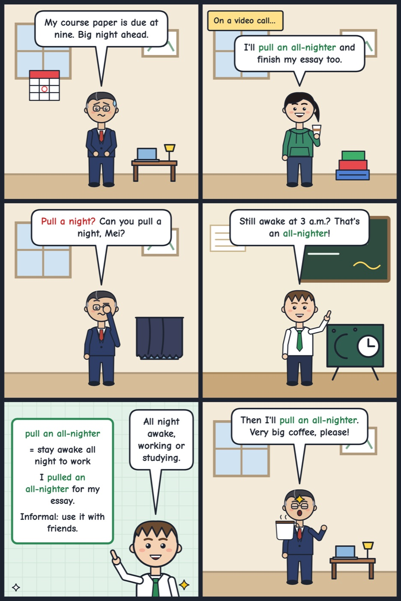

pull an all-nighter
To stay awake all night to study or finish work.
I had to pull an all-nighter to finish my essay.
To pull an all-nighter means to stay awake all night to study or work. It's informal, so use it with friends.
Your turn
Have you ever pulled an all-nighter? What for?
Have you ever pulled an all-nighter? What for?
See it in a comic
